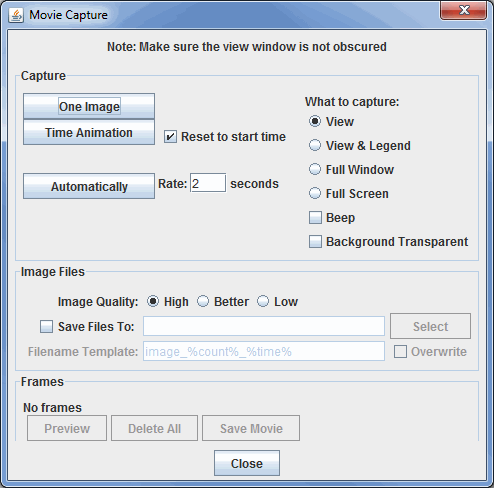

Image and Movie Capture
You can capture the main 3D view as an image, a QuickTime movie or an animated GIF.
Saving Images
You can save a display as an image by selecting the View->Capture->Image... menu
item. A file dialog will popup where you can enter a file name for the image
file. McIDAS-V supports JPEG, PNG, GIF, PDF, PS, and SVG formats. From this File
Dialog you can also specify the image quality (only used for JPEGs) and what
to capture. You can also select whether or not the background is transparent.
Note: When capturing an image, the screen cannot be obscured.
McIDAS-V can also write out an image and the corresponding Google Earth KML
or KMZ file. For this to be correct the projection must be a Lat/Lon geographic
projection (i.e., rectilinear) and in an overhead view. Some of the default
projections that are Lat/Lon include World, Africa, Asia, Australia, and the
individual state projections (US->States->...). You can also create your own
Lat/Lon projection using the Projection
Manager. The simplest way to get a
correct projection is to select the Projections->Set
Current View as Projection menu
item. If you specify a .kml file McIDAS-V will generate an image with the same
file prefix and the kml file that refers to the image. If you specify a .kmz
file (which is a zip format) it will contain the image and the kml
file.
Printing Current View
You can send any display to a printer. Select the View->Capture->Print... menu
item. A Print dialog will popup where you can configure and print an image.
Saving QuickTime Movies
You can save any sequence of displays as a movie. Select the View->Capture->Movie... menu
item to bring up the Movie Capture window:

Properties
- Capture
 - Captures one image to create a movie.
- Captures one image to create a movie. - Captures a loop of images at the specified dwell rate through the Time Animation Controls.
- Captures a loop of images at the specified dwell rate through the Time Animation Controls.- Reset to start time - Resets the loop to the initial timestep before recording the video.
-
 - Creates a new frame in the movie every given number of seconds.
- Creates a new frame in the movie every given number of seconds.
- What to capture
- View - Captures only what is in the view screen of the Main Display Window.
- View & Legend - Captures both the view and the Legend.
- Full Window - Captures the entire Main Display Window, including the toolbars.
- Full Screen - Captures everything visible on the monitor.
- Beep - Produces a beeping noise at the end of the recorded movie.
- Background Transparent - Captures the movie with the background image transparent.
- Image Files
- Image Quality - Sets the quality of the images. Lower quality images will utilize less memory, but will not look as good.
- Save Files To - Sets the location where you want to store the movie.
- Filename Template - Represents the name of the movie. There are several ways you can customize the output.
- Frames
- # frames - Displays the number of frames in the movie.
 - Opens a Movie Preview window, where you can see individual slides before saving the movie.
- Opens a Movie Preview window, where you can see individual slides before saving the movie.-
 - Deletes every frame saved in the movie.
- Deletes every frame saved in the movie.
- - Saves the movie to the specified location in the chosen format type.
Creating a Movie
To make a movie, there are three steps: capturing the frames, previewing the frames, and creating the movie. McIDAS-V supports QuickTime movies, animated GIF and AVI files, Google Earth KMZ and ANIS Apple HTML file formats.
- To capture frames, in the Capture section of the Image Capture window, do the following:
- Capture one image - Makes a single frame of the McIDAS-V display. Progressively change the display and capture one frame at a time to create a movie.
- Capture animation - Captures all frames in a display time sequence you can animate with the usual Time Animation Controls. Check Reset to start time to ensure you capture the entire animation sequence. The QuickTime animation capture starts on the first frame visible in McIDAS-V and goes to the end. This tool can be used to capture part of a loop.
- Capture automatically - Takes snapshots of the frames in McIDAS-V display while you make changes, such as changing the view point, zooming, rotating, etc. Click the button again to stop the snapshot. You can change the sampling rate of the snapshots with the Rate field.
- You can combine these three different methods of capture. The list of frames is additive.
- You can Preview the movie by pressing the button. This opens a Movie Preview window, where you can see the individual slides before saving the movie. The Movie Preview window also allows you to remove individual frames from the movie before saving it with the button.
- If you want to save the individual intermediate files that are used to create the movie, check the Save files to box and specify a directory and file name format. Otherwise, the intermediate files will be
saved in a temporary directory and will be removed. You can use the following templates to customize the name of the output file:
- %count% - Represents the image counter
- %count:decimal format% - Allows you to format the count using the same rules defined in the lat/lon format section of the User Preferences. (or Google 'java decimalformat' for more information).
- %time% - Represents the animation time in the default format.
- %time:time format% - Begins with "time:" and contains a time format string using the the same date formatting rules described in the User Preferences.
- When done capturing the frames, select the button to specify the name and format of the file you want to save.
Playing QuickTime Movies
McIDAS-V supports displaying certain types of Quicktime movies (including
the ones McIDAS-V generates). These movies can be loaded in the Quicktime movie from the File Data
Chooser in the Data Sources tab of the Data Explorer.